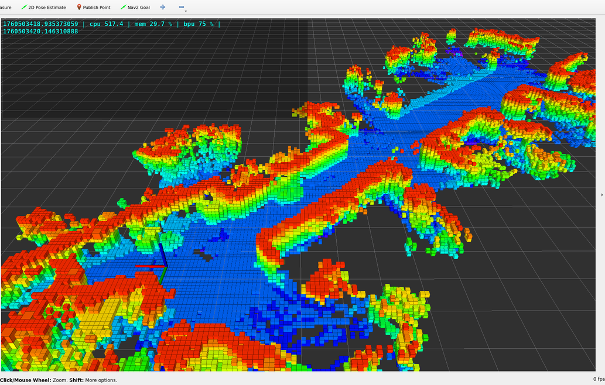
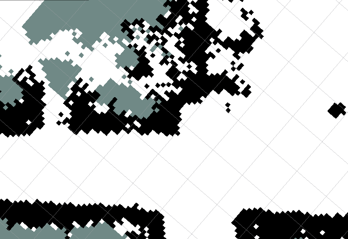
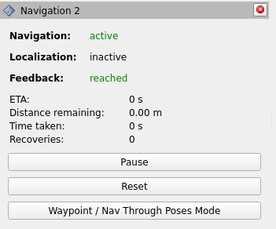
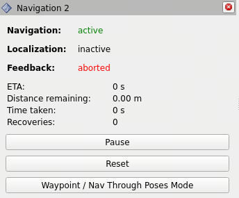
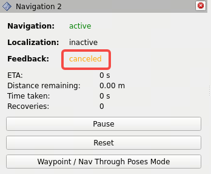
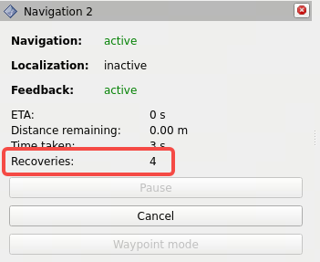
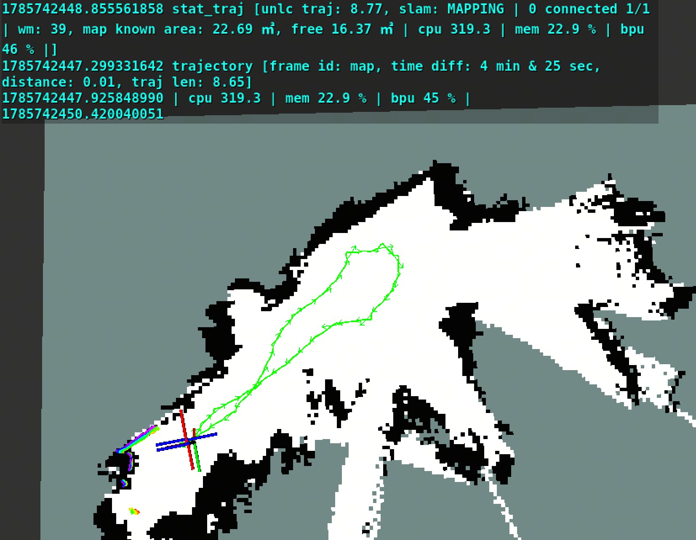
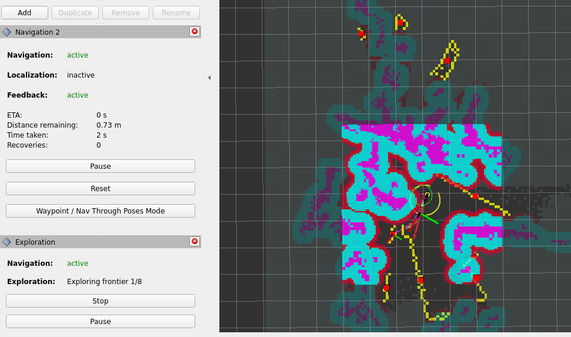

FAQ
常用模式配置
选择底盘
修改配置文件中robot的参数，设置底盘类型（originbot/myrobot/create3），其中myrobot表示自定义底盘，需要根据实际情况修改。
# 打开配置文件
vi `ros2 pkg prefix tros_vision_nav --share`/params/params.yaml
# 将"robot_base"参数设置为 originbot/myrobot/create3
选择相机参数
修改配置文件中camera参数组中的mipi_rotation配置项，根据相机类型设置旋转角度：
# 打开配置文件
vi `ros2 pkg prefix tros_vision_nav --share`/params/params.yaml
# 设置mipi_rotation为90.0/0.0
注意
- RDK Stereo Camera GS130WI（70mm 基线(带IMU)双目相机）不需要设置图像旋转，即启动时指定mipi_rotation=0.0。
- 80mm以及其他基线（不带IMU）需要设置图像旋转，即启动时指定mipi_rotation=90.0。
选择里程计
修改配置文件中switch参数组中的odom_type配置项，选择里程计来源：
# 打开配置文件
vi `ros2 pkg prefix tros_vision_nav --share`/params/params.yaml
# 设置odom_type为wheel/vio
配置说明： wheel 表示轮式里程计。 vio 表示视觉里程计
注意 只有70mm基线（带IMU）相机支持vio。
选择运动类型
SLAM建图默认采用的机器人运动类型为2D平面移动，如果机器人为3D运动（机器人运动过程中存在roll/pitch/z轴高度的变化），需要将SLAM建图设置为支持3D运动模式。 修改配置文件中rtabmap参数组中的rtabmap_Reg_Force3DoF（设置为False）和rtabmap_Mem_UseOdomGravity（设置为True）配置项，打开支持3D运动模式：
# 打开配置文件
vi `ros2 pkg prefix tros_vision_nav --share`/params/params.yaml
# 设置 rtabmap_Reg_Force3DoF: "'False'"
# True=3DoF(xy+yaw), False=6DoF
# 设置 rtabmap_Mem_UseOdomGravity: "'True'"
# True=use VIO orientation as gravity ref
注意
- 只有当里程计类型为vio时，SLAM建图才支持3D运动模式。如果里程计类型为wheel，禁止打开SLAM建图的3D运动模式。
- 目前仅70mm基线（带IMU）相机支持vio。
使用OriginBot轮式里程计
地瓜机器人对OriginBot的MCU程序进行了重构和优化，包括数据采集频率、轮速采集计算周期、硬件同步数据触发、时间同步等功能，使最终EKF融合出的odom更准。
如使用OriginBot轮式里程计，请确保下载和烧写本章节提供的固件。
双目相机和深度估计
双目相机相关问题参考双目MIPI图像采集。 深度估计相关问题参考双目深度算法。
地图
Q1 重新建图
SLAM创建的地图保存在RDK X5上的文件名为/userdata/rtabmap/office.db，如果需要删除地图并重新创建地图，先停止SLAM程序，然后执行rm /userdata/rtabmap/office.db命令后重新运行SLAM。
Q2 地图说明
SLAM 3D地图：蓝色区域表示低矮障碍物区域（地面也属于这一类）；蓝色以上从绿色到红色，表示障碍物高度依次增加（限制了地图中的障碍物高度小于0.5米）；黑色区域表示未知区域。
SLAM 2D地图：白色区域表示无障碍物，黑色区域表示障碍物区域；灰色区域表示未知区域。
导航地图：高亮区域表示局部代价地图（local costmap，箭头1、2、3所在区域）；低亮区域表示全局代价地图（global costmap，箭头5所在区域）；1表示实际障碍物区域；2和3表示膨胀层；4表示无障碍物；5表示全局代价地图的障碍物层和膨胀层。
SLAM 3D地图和2D地图之间的关系：3D地图通过卡高度阈值去除地面，Z轴（地面高度方向，对应右手坐标系的Z轴）投影到地面后得到2D地图，用于下游的导航和避障任务。
导航代价地图和SLAM 2D地图之间的关系：SLAM 2D地图作为导航代价地图中的静态障碍物层，同时叠加障碍物识别算法提取的低矮障碍物，最终的到用于导航和避障的导航代价地图。
| SLAM 3D地图 | SLAM 2D地图 | 导航代价地图 |
|---|---|---|
 |
 |
 |
导航代价地图中膨胀层的说明参考https://wiki.ros.org/costmap_2d/hydro/inflation
Q3 地图信息统计
运行如下命令，统计VSLAM算法创建的地图的分辨率，未知、free和障碍物区域面积等信息：
source /opt/tros/humble/local_setup.bash
source /userdata/vims/install/local_setup.bash
ros2 launch tros_stat_monitor tros_stat_monitor.py
终端周期输出如下统计信息：
[INFO] [1762748921.463344673] [map_area_calculator]: =====================static map info=========================
[INFO] [1762748921.466589630] [map_area_calculator]: resolution: 0.05 m/cell
[INFO] [1762748921.469902669] [map_area_calculator]: width x height: 447 x 388 cells -> area: 22.35 x 19.40 ㎡
[INFO] [1762748921.473166708] [map_area_calculator]: total cells: 173436 -> area: 433.59 ㎡
[INFO] [1762748921.477092289] [map_area_calculator]: unknown cells: 116401 -> area: 291.00 ㎡
[INFO] [1762748921.480386828] [map_area_calculator]: free cells: 47831 -> area: 119.58 ㎡
[INFO] [1762748921.483860284] [map_area_calculator]: obstacle cells: 9204 -> area: 23.01 ㎡
[INFO] [1762748921.487154782] [map_area_calculator]: known area: 142.59 ㎡
[INFO] [1762748921.490374780] [map_area_calculator]: =============================================================
统计信息中各字段说明如下：
| 字段 | 说明 |
|---|---|
| resolution | 栅格（cell）分辨率 |
| width x height | 地图的宽和高 |
| total cells | 地图中总栅格数 |
| unknown cells | 地图中未知区域（不确定有无障碍物）的栅格数 |
| free cells | 地图中free（确定无障碍物）区域栅格数 |
| obstacle cells | 地图中障碍物区域的栅格数 |
| known area | 地图中free和obstacle区域的总面积 |
导航
Q1 导航成功
在RVIZ的Navigation 2 Panel上，Feedback的状态显示reached，表示导航任务成功完成：

Q2 导航失败
在RVIZ的Navigation 2 Panel上，Feedback的状态显示aborted，表示导航失败：

Q3 导航过程控制
导航过程中，支持取消本次导航，或者设置新的目标位置，以新位置重新导航。 取消本次导航的方法为，在RVIZ的Navigation 2 Panel上，选择Cancel按键（左下图），取消后Feedback的状态显示canceled（右下图）。
| 导航中 | 取消导航后 |
|---|---|
 |
 |
Q4 脱困
当机器人在执行导航任务时，如果路径规划失败，机器人将会进入脱困流程， 在RVIZ的Navigation 2 Panel上，Recoveries状态显示尝试脱困的次数一直在增加，直到脱困成功或者失败。脱困中：

在导航的行为树配置文件中，指定了脱困的流程。在RDK X5上查看行为树配置命令：
cat `ros2 pkg prefix tros_vision_nav --share`/params/navigate_to_pose_w_replanning_and_recovery.xml
行为树节点可视化如下：

脱困流程：
路径规划（ComputePathToPose）失败时，开始自主探索环境，直到规划成功或者超时（15秒超时）；
如果自主探索环境超时，开始清理地图（ClearingActions），重新生成global/local costmap；
自主探索环境和清理地图两个过程执行3次（NavigateRecovery中的number_of_retries）后，如果仍然路径规划失败，本次导航失败。
因此脱困最长执行时间是45秒（15 x 3）+2次RecoveryFallback，实际约50秒左右。
数据录制
Q1 命令行录制
使用ros2命令行工具在RDK上在线录制bag包，用于数据回放分析问题，支持使用ros2 bag play命令和工具回放。使用命令ros2 bag record -h查看详细数据录制使用方法。 需要录制的基础数据如下：
ros2 bag record /rosout /map /tros_diagnostics /global_costmap/costmap /local_costmap/costmap \
/global_costmap/tros_layer_pcl/tros_dynamic_obstacle_costmap /local_costmap/tros_layer_pcl \
/tros_dynamic_obstacle_costmap /tros_goal_pose /tf /tf_static /local_costmap/published_footprint \
/object_point_cloud /StereoNetNode/stereonet_depth/camera_info /global_path /plan_smoothed \
/received_global_plan /transformed_global_plan /local_plan /cmd_vel /cmd_vel_nav \
/tros_observing_markers /tf /tf_static /image_jpeg
如果需要录制深度估计输出的点云，录制时添加/StereoNetNode/stereonet_pointcloud2话题。
Q2 自动录制
移动solution包含数据trigger & recorder工具，用于路径规划失败时自动触发录制系统状态数据，通过离线回放数据定位问题，支持录制触发前的数据（影子模式）。
工具默认关闭，开启方式为将`ros2 pkg prefix tros_vision_nav --share`/params/tros_nav2.yaml配置文件中enable_record配置项设置为true后，重新启动导航命令。录制的数据保存在运行路径下，路径名为bag_[planner_server]_[时间戳]。
planner_server:
ros__parameters:
expected_planner_frequency: 20.0
use_sim_time: True
planner_plugins: ["GridBased", "TrosGlobalPlanner"]
GridBased:
plugin: "nav2_navfn_planner/NavfnPlanner"
tolerance: 0.5
use_astar: true
allow_unknown: true
TrosGlobalPlanner:
plugin: "tros/TrosGlobalPlanner"
pre_controller: "Exploration"
primary_controller: "nav2_navfn_planner/NavfnPlanner"
tolerance: 0.5
use_astar: false
allow_unknown: true
enable_record: false
VSLAM
如何测试VSLAM回环
本章节介绍如何可视化机器人的移动轨迹，以及测量回到起点后的定位误差。
启动VSLAM
打开RDK X5终端，运行如下命令，包含环境感知，VSLAM，rviz可视化：
source /opt/tros/humble/local_setup.bash
source /userdata/vims/install/local_setup.bash
mkdir -p /userdata/rtabmap/
# 删除地图文件
rm /userdata/rtabmap/office.db
YAML_CONFIG_FILE=`ros2 pkg prefix tros_vision_nav --share`/params/params.yaml \
run_explore=False run_traj_viz=True run_nav=False localization=False \
bash `ros2 pkg prefix tros_vision_nav --share`/launch/run_launch.sh
配置RVIZ
RVIZ上，将坐标系设置为map，勾选MapStatic（2D地图），traj_map（移动轨迹）和traj_starter_map（轨迹起点）。如果需要查看3D地图，勾选ColorOccupancyGrid。

提示 建图过程中，建议关闭3D地图渲染，以免影响建图质量，建好图后再打开3D地图渲染。
启动键盘控制
打开RDK X5终端，运行如下命令，启动键盘控制功能包，用于使用键盘控制机器人移动：
source /opt/tros/humble/local_setup.bash
ros2 run teleop_twist_keyboard teleop_twist_keyboard
测试
使用键盘控制机器人移动，移动过程中（左下图），rviz上会渲染起点、运行轨迹、轨迹信息。最终机器人回到起点后（右下图），可以看到机器人当前pose和起始pose之间的距离偏差，即回环偏差。从右下图可以看到，机器人移动了26米，耗时6分25秒，回环偏差0.02米。
| 移动过程中 | 回到起点后 |
|---|---|
 |
 |
渲染的轨迹信息说明：
| 信息 | 说明 |
|---|---|
| frame id | 轨迹坐标系 |
| time diff | 机器人从移动开始到结束的时间 |
| distance | 机器人当前pose和起始pose之间的距离偏差，即回环偏差 |
| traj len | 机器人从移动开始到结束的轨迹总长度 |
自主探索建图
Q1 自主探索建图过程
step1: 观测周围环境。启动自主探索后，先旋转一周观测周围环境。
step2: 搜索地图边界。使用边界搜索算法从global costmap中识别出地图中的边界。如下图黄色点为costmap边界的栅格（cell）。
step3: 计算待探索点。对于每个边界区域，计算出其中心点（如下图红色方格），作为待探索点，即导航目标点（goal pose），优先探索最近的边界区域。
step4: 开始探索。使用导航算法控制机器人到达goal pose。如下图是探索过程中，rviz上渲染了规划出来的路径，Exploration Panel的Exploration状态显示为“Exploring frontier 1/8”表示总共有8个待探索区域，当前正在探索第1个区域。
step5: 探索完成。完成探索后，机器人停止。
探索建图中：

Q2 建图区域
如果发现生成的地图不完整，或者需要对更大区域进行建图，请尝试增加探索半径阈值frontier_search_radius和路径规划长度阈值frontier_goal_nav_path_dist（默认值的查看方法为：使用命令vi `ros2 pkg prefix tros_vision_nav --share`/params/params.yaml打开配置后，搜索参数关键字）。
这两个参数说明如果待探索区域和机器人当前位置的距离超过frontier_search_radius米，或者规划出来的路径长度超过frontier_goal_nav_path_dist米，忽略探索这块区域。
例如启动时将frontier_search_radius设置为25.0，frontier_goal_nav_path_dist设置为50.0的命令如下：
source /opt/tros/humble/local_setup.bash
source /userdata/vims/install/local_setup.bash
cp -r `ros2 pkg prefix dnn_node_example`/lib/dnn_node_example/config .
YAML_CONFIG_FILE=`ros2 pkg prefix tros_vision_nav --share`/params/params.yaml \
frontier_search_radius=25.0 frontier_goal_nav_path_dist=50.0 \
bash `ros2 pkg prefix tros_vision_nav --share`/launch/run_launch.sh
Q3 参数说明
自主探索建图涉及到的参数详细说明：
| 参数名 | 含义 | 取值 |
|---|---|---|
| min_frontier_size | 最小边界尺寸阈值，只探索超过阈值的边界 | > 0 |
| return_to_init | 探索完成后是否回到起点 | true/false |
| explore_retry_limit | 探索完成后再次重新探索的次数 | >= 0 |
| nav_timeout_seconds | 一次导航的时间限制，超过限制将会取消本次导航 | >= 0 |
| frontier_search_radius | 探索半径阈值，只探索和机器人当前位置的距离小于阈值的边界 | > 0 |
| frontier_goal_nav_path_dist | 路径规划长度阈值，如果到导航目标点的路径长度超过阈值，取消本次导航 | > 0 |
| move_time_allowance | 移动超时时间，如果在超时时间内移动距离小于move_radius，取消本次导航 | > 0 |
| move_radius | 移动超时距离 | > 0 |
具体参数实际取值可打开配置文件查询：
# 打开配置文件
vi `ros2 pkg prefix tros_vision_nav --share`/params/params.yaml
单模块运行命令
1. 运行时指定配置文件
# 默认使用的配置文件为`ros2 pkg prefix tros_vision_nav --share`/params/params.yaml
# 支持启动时用户使用YAML_CONFIG_FILE环境变量指定配置文件
YAML_CONFIG_FILE=/userdata/params.yaml \
bash `ros2 pkg prefix tros_vision_nav --share`/launch/run_launch.sh
2. 只启动rviz
ros2 run rviz2 rviz2 -d `ros2 pkg prefix tros_vision_nav`/share/tros_vision_nav/params/nav.rviz
3. 只启动导航
YAML_CONFIG_FILE=`ros2 pkg prefix tros_vision_nav --share`/params/params.yaml \
localization=True log_level_nav=info LAUNCH_FILE="nav.launch.py" \
bash `ros2 pkg prefix tros_vision_nav --share`/launch/run_launch.sh
4. 只启动自主探索
YAML_CONFIG_FILE=`ros2 pkg prefix tros_vision_nav --share`/params/params.yaml \
LAUNCH_PACKAGE=tros_frontier_exploration LAUNCH_FILE="explore.launch.py" \
bash `ros2 pkg prefix tros_vision_nav --share`/launch/run_launch.sh
5. 只启动底盘和双目深度估计
stereonet_pub_web=True run_pcl2grid=False run_rviz=False run_perc=False run_slam=False run_nav=False run_explore=False run_mask_depth=False mipi_image_framerate=20.0 bash `ros2 pkg prefix tros_vision_nav --share`/launch/run_launch.sh
6. 只启动通用障碍物识别
YAML_CONFIG_FILE=`ros2 pkg prefix tros_vision_nav --share`/params/params.yaml \
LAUNCH_FILE="pcl_obstacle_det.launch.py" use_composition=False \
bash `ros2 pkg prefix tros_vision_nav --share`/launch/run_launch.sh
7. 只启动语义目标识别
YAML_CONFIG_FILE=`ros2 pkg prefix tros_vision_nav --share`/params/params.yaml \
odom_type=wheel run_mask_depth=False run_pcl2grid=False run_explore=False \
run_slam=False run_nav=False run_rviz=False \
bash `ros2 pkg prefix tros_vision_nav --share`/launch/run_launch.sh